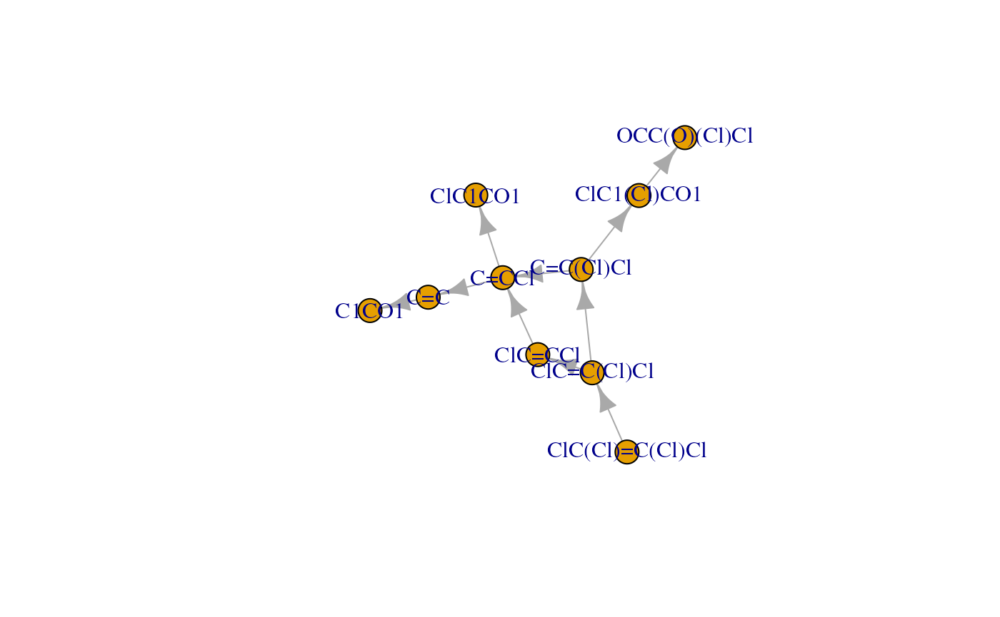

enviPathR.RmdBioconductor release version:
if (!requireNamespace("BiocManager", quietly = TRUE))
install.packages("BiocManager")
BiocManager::install("enviPathR")Beta version:
remotes::install_github("Minotau-R/enviPathR")Then, we can import enviPathR and another couple of optional packages used in this tutorial.
# Log into your enviPath account
epLogin(username, password)
#> Hi nature lover, welcome to enviPath!
pkg_df <- epList("package")
to_keep <- pkg_df$reviewStatus == "reviewed"
pkg_df <- pkg_df[to_keep, ]
# View list
kable(pkg_df)| name | id | reviewStatus | description | Pathways | Rules | Compounds | Reactions | Relative Reasoning | Scenarios | |
|---|---|---|---|---|---|---|---|---|---|---|
| 3 | Public Prediction Models | 134886bb-b52e-4ad6-91d3-a02cecde6d95 | reviewed | Package to make Prediction Models publicly available | 0 | 0 | 0 | 0 | 3 | 0 |
| 6 | EAWAG-SEDIMENT | f05e38d8-e9b4-4c3e-b0d8-9ab29966eccf | reviewed | The “EAWAG-SEDIMENT” package contains pathways and kinetic data from biodegradation studies performed in water-sediment systems. This information is extracted from pesticide registration dossiers (draft assessment reports, DAR) made publically available through the European Food Safety Authority (EFSA). The package also contains information on different experimental conditions that are stored in the object scenario. Compounds in the pathway are associated with a given scenario if they have been observed under the specific experimental conditions. If available, a total system biotransformation half-life (DT50) value is associated with a given compound in the pathway and a specific scenario, along with dissipation half-lives from the water and the sediment phases. | 179 | 0 | 810 | 961 | 0 | 1622 |
| 7 | enviPath-PFAS | 87a49584-d937-482c-9c33-25928dcb02a8 | reviewed | A collection of literature-reported biotransformation pathways for per- and polyfluorinated alkyl substances (PFASs). Last updated on June 9th 2026. | 214 | 0 | 590 | 915 | 0 | 288 |
| 9 | EAWAG-SOIL | 5882df9c-dae1-4d80-a40e-db4724271456 | reviewed | “EAWAG-SOIL” package contains pathway information from soil degradation studies, stored in a biotransformation reaction scheme in the object pathway. This information is extracted from pesticide registration dossiers (draft assessment reports, DAR) made publically available through the European Food Safety Authority (EFSA). The package also contains information on different experimental conditions that are stored in the object scenario. Compounds in the pathway are associated with a given scenario if they have been observed under the specific experimental conditions. If available, a biotransformation half-life (DT50) value is additionally associated with a given compound in the pathway and a specific scenario. More details concerning enviPath conventions that were used to store specific data from DAR, and their description can be found in our wiki. | 317 | 0 | 2608 | 2445 | 0 | 4881 |
| 11 | EAWAG-SLUDGE | 521c547a-fd2a-491c-ad5b-7eaa1577fb65 | reviewed | The EAWAG-SLUDGE package contains pathways and kinetic information about microbially mediated transformation processes in biological wastewater treatment. The information was extracted from scientific publications in different journals. The biotransformation reaction schemes are stored as pathways. The experimental conditions and additional information (e. g. sludge source) are collected in the scenario objects. Any observed transformation products (compounds) are linked to their corresponding experimental metadata (scenario). Kinetic parameters (rate constants and/or half-lives) including corresponding scenarios are indicated for compounds for which such data is available. More details regarding enviPath conventions can be found in our wiki. | 183 | 0 | 1067 | 494 | 0 | 85 |
| 14 | EAWAG-BBD | 32de3cf4-e3e6-4168-956e-32fa5ddb0ce1 | reviewed | Migration package for pathways, reactions and compounds from the EAWAG-BBD database | 219 | 499 | 1399 | 1480 | 0 | 1915 |
# Select desired package
pkg_name <- "EAWAG-BBD"
pkg_id <- pkg_df$id[pkg_df$name == pkg_name]
# List pathways from desired package
path_df <- epList("pathway", pkg = pkg_id)
# View list
kable(path_df)| name | id | reviewStatus |
|---|---|---|
| Uranium | 259b990e-d653-4201-9282-04f2c6b05ca0 | reviewed |
| 2-Aminobenzenesulfonate | 1e7066c2-ff45-44f4-9086-e37db18400df | reviewed |
| Nicotine | 1e94c7d7-7f3a-42c7-9dd0-eb1ab217d7ec | reviewed |
| 2-Aminobenzoate | dfc8c935-9d73-4067-bfe6-db3501d2075f | reviewed |
| Caffeine | 1d537657-298c-496b-9e6f-2bec0cbe0678 | reviewed |
| Dimethylisophthalate | a0641e14-3811-482f-a366-cc53f893fce4 | reviewed |
| 4-Chlorobiphenyl | 3d627cfe-a944-431e-afee-1d92014bb035 | reviewed |
| Toluene (anaerobic) | 433fdde8-2f07-49d3-acc0-47aa695d2c9a | reviewed |
| Ibuprofen | ec61fd05-6400-4ab1-8d9c-56fa16cc035e | reviewed |
| 2,4-Dichloroaniline | b83729c6-d40a-477d-8618-a05000ca4f1a | reviewed |
| Adamantanone | b91e3577-f69f-464a-9b0b-5d9767864b6e | reviewed |
| Mordant Yellow 3 | 43e85f4c-7efe-4a45-8f51-e7f25e4ed16a | reviewed |
| Caprolactam | ac2a61a5-22e2-47a4-8a44-b3a027c90428 | reviewed |
| Dimethyl Sulfoxide & Organosulfide Cycle | 439c86fc-abb3-4269-b158-e166fbc3a974 | reviewed |
| Organosilicone (an/aerobic) | 4fb5b3e7-dd23-44dd-9d9d-ae9c6ce4a921 | reviewed |
| Phenanthrene (fungal 9R,10R) | a2a860c7-8ae2-44be-b979-84e11c1d5bd6 | reviewed |
| Permethrin | 90e662ba-96a7-4e37-8872-76a146717dc3 | reviewed |
| Anthracene (fungal) | cb600409-f044-4e55-890c-495269817d55 | reviewed |
| 2-Mercaptobenzothiazole | 7f206519-4fab-488f-bb6f-48b8cbbb96af | reviewed |
| Isooctane | d2157424-aef9-4997-bbb0-f8678b23d3ec | reviewed |
| N-Methylmorpholine-N-oxide | 16452903-5359-4790-8909-998e8ce19708 | reviewed |
| Trichloroethylene | 956965db-6108-43b1-a8c3-e7c7d57ae291 | reviewed |
| 3-Nitrotyrosine Family | 8296403d-597b-4c86-b888-b9827dac5fa5 | reviewed |
| Nitrofen | 53c7dbcf-133d-4fad-a5bf-f4ed832a9ab6 | reviewed |
| Picric Acid Family | 6598285e-566b-4f53-8b72-a2c84d9ed0f6 | reviewed |
| Limonene | 79f20508-191a-4631-b636-05cdf806e51e | reviewed |
| Organomercury | 07f4cb0e-c553-4eda-a826-9f754b12eb62 | reviewed |
| Atrazine | b3d4b253-37e4-4aac-929f-83bd59dc5277 | reviewed |
| 1,5-Anhydro-D-fructose (Fungal) | e20b5028-7865-4ae0-b512-25dca0a10603 | reviewed |
| Toluene | b0cb0262-3f5d-4a17-81ff-1560f9f5b4cd | reviewed |
| Tetrachlorobenzene | d0ca2469-a571-45a4-9a2e-7bc5a09e87b8 | reviewed |
| Cyclopropanecarboxylate | cb7f1a50-be0e-4b71-8b08-70c8ee29e1d7 | reviewed |
| Propylene | 0b970043-0d9d-44b5-af68-1430580caef1 | reviewed |
| Z-Phenylacetaldoxime | a580c7dd-d9b2-4ec7-b70b-84b828ccdf1d | reviewed |
| Cyclohexane | 8c3caf9b-5b5d-4173-b2c4-0db8c3d89a07 | reviewed |
| o-Xylene | 541a1061-2fe7-418c-84ca-4a07f3c8cf0c | reviewed |
| Phorate | b11f4d8c-d957-4822-91f0-d521026fc174 | reviewed |
| Carbazole | 853d5810-7f5c-4e43-8fe6-9cc241a2b30f | reviewed |
| N-Nitrosodimethylamine | a78b4206-c81e-4169-bd22-9d3f8a266030 | reviewed |
| 2,4-Dinitrotoluene | b9164e5d-03aa-4d62-b5fb-537435f832c2 | reviewed |
| Methionine and Threonine | 5e7c8a50-0bf7-4cc3-9e88-7bffce1e886c | reviewed |
| Fosfomycin | 9a53d7d0-c41e-448f-bdf3-ad6cec6786f3 | reviewed |
| Nitrate (anaerobic) | b31e0bd5-2357-4497-b221-f307fd6245e8 | reviewed |
| Testosterone | 47d8d0a3-cc85-4460-afcb-fbe79e595e53 | reviewed |
| Thiobenzamide | 85e7f0d7-0515-434d-ad3d-1aa9682fef30 | reviewed |
| Phenol (anaerobic) | c1dfcc66-f974-4cdc-a026-cc1274518f3f | reviewed |
| n-Hexane (anaerobic) | 1cee659a-fdf9-4433-b285-00dbfcc27bca | reviewed |
1,1,1-Trichloro-2,2-bis-(4-chlorophenyl)ethane (DDT) |3f58e4d4-1c63-4b30-bf31-7ae4b98899fe |reviewed | |Pyridoxine |84d54a87-173a-49f9-a87a-f43d35ef6a42 |reviewed | |Dichloromethane |a2e77e6c-4591-4680-aac4-4ad04321d736 |reviewed | |Anthracene |fe417a7c-671a-476b-9fe0-0e73133aa4db |reviewed | |Perchlorate (anaerobic) |63f713de-fbe6-441e-a1a1-27c26c9920b8 |reviewed | |Imidosuccinate |de52afb6-9bb2-4f1a-a3ce-4ef768c6a2fb |reviewed | |Styrene |7e338671-08c7-4d7a-ac70-5b7bcaa46bec |reviewed | |Toluene-4-sulfonate |49663870-adcd-4f18-b89f-187b71bdaadd |reviewed | |Fluorene |3f8f8bbe-d987-4797-a8ed-6bfeaf241963 |reviewed | |Valanimycin Synthesis |8ea8893b-3403-4f8e-b68a-76e6517a9e45 |reviewed | |Selenate |ea0c3ca2-0f66-4062-ae8c-e4f9ea67b4f0 |reviewed | |Tyrosine |5243d831-1cc8-47c3-b222-cb8296faf0b5 |reviewed | |2-Nitropropane |9da20e2b-b8eb-42c7-b4a4-82f3627c3b9f |reviewed | |Iprodione |96fa3016-37cd-451d-9e0b-4fae1d5c078c |reviewed | |N-Cyclohexylisocyanide |528c5e3b-c5f1-40df-9a36-8200b882634e |reviewed | |2-Chloro-N-isopropylacetanilide |8b2681ef-8949-4fd9-80dd-209ee14bf7e1 |reviewed | |Atenolol |00d0d3e7-f735-43ed-8711-b015888a94a6 |reviewed | |3,3-Dithiodipropionate |
bc771e37-0bab-4faa-866d-c78cac5eb02d | reviewed |
| Trifluoroacetate (An/Aerobic) | f54e1de8-8c71-45bf-bd05-49542135a42d | reviewed |
| (+)-Camphor | 8ee9cf25-ece9-4c21-886c-23936be81f30 | reviewed |
| Ethylbenzene (anaerobic) | de8c243d-1a74-493c-bfe0-6e4d3a5e5573 | reviewed |
| Dodecyl sulfate | 9e27ca6f-bc01-4375-bd04-286b489ae45e | reviewed |
| Carbaryl | e1754a38-9168-4440-a756-ec694fc75b05 | reviewed |
| Osmium Reduction | 880797b7-56cb-48a8-8d41-9b052f031062 | reviewed |
| Mandelate | d2973148-2c7f-4bcb-9aee-72bc890bad52 | reviewed |
| Atropine | 8a650dac-691c-41cd-8690-5f160fd2a536 | reviewed |
| Geraniol | a771d726-5905-4ed6-b6f5-a61730e8b909 | reviewed |
| Glyphosate | a829bde7-f971-4d88-8c3c-2d1e7a6d426a | reviewed |
| Pentaerythritol tetranitrate | b61f6af0-8934-4c07-b4cf-9907b10345f1 | reviewed |
| 2-Methylnaphthalene | 9f76d22e-da25-4285-ba97-88a424c1b44e | reviewed |
| Furfural | f6189f95-69d2-41f4-a2c7-e6b089b2660c | reviewed |
| Benzonitrile | f775a113-abc2-403d-bc05-f01aa134f659 | reviewed |
| p-Cymene | 15814aac-7cd9-445d-86ae-014abeca9327 | reviewed |
| Metamitron | 654b931c-8a6e-4b16-b752-2ffd1ecfa93a | reviewed |
| 2-Methylnaphthalene (anaerobic) | bec2dab7-bd05-4d4b-8a9c-b2d5ee2e3990 | reviewed |
| Tetralin | b289a12a-8f05-48f7-a992-6218e867e4d9 | reviewed |
| Hexadecyltrimethylammonium Chloride | f3885a3b-40a0-447d-b51c-29de72c11181 | reviewed |
| Cyclohexylsulfamate | cabcf242-14a0-4ebd-a2a9-4a5a026fc47d | reviewed |
| Nitroglycerin | 14c1a1eb-4154-476f-900b-b49767e398c3 | reviewed |
| Isoproturon | c45ea1a5-6684-4199-859b-3dfcc8430f63 | reviewed |
| Carbofuran | 9fc7222b-056a-4764-bb2a-78e3437c691a | reviewed |
| gamma-1,2,3,4,5,6-Hexachlorocyclohexane | 696c3086-db2b-4172-a2d2-3278be723312 | reviewed |
| 2,4,6-Trinitrotoluene (anaerobic) | 306bc0b7-b0b1-421e-b1d4-32a2a9cd3e35 | reviewed |
| s-Triazine Metabolism Metapathway | 306d6d02-854e-4c9f-9aaf-a5ef7409cbf9 | reviewed |
| beta-1,2,3,4,5,6-Hexachlorocyclohexane (an/aerobic) | 9b38552a-5c55-4032-9483-96615fa9c4b7 | reviewed |
| 1,4-Dioxane | 19a53ddd-7bbe-43b3-bd56-c1c35302d185 | reviewed |
| Quinaldine | f39313dd-9885-45d2-b94d-c31004cb389b | reviewed |
| Thioacetamide | 869bb223-f969-44d9-ad28-25aff294be0a | reviewed |
| 1,2,3-Tribromopropane | 7afd54ce-fad0-4f3d-a3f8-e05d9ec96eaa | reviewed |
| Nitrobenzene | 314a846a-9db9-4530-bb39-bafe170f275e | reviewed |
| 4-Hydroxyacetophenone | 40a69f9c-a867-46b1-88ac-c65d8918afa4 | reviewed |
| Morpholine | 2a159df3-3c29-4e6b-838b-4b2427df4bbb | reviewed |
| Isoniazid | 727547bb-3fdd-4b8b-b39b-43fb3a71f639 | reviewed |
| Dibenzothiophene Desulfurization | 58023e5f-c934-4dc7-b674-be68d8503928 | reviewed |
| alpha-Pinene | 187c9c4e-6dfa-4668-983e-494488a5a192 | reviewed |
| Benzoate (anaerobic) | d1ec9ff6-b3c2-4da3-b0bb-9af5d032da72 | reviewed |
| Quercetin | 52acf2e6-4a7f-486d-b196-7a7a2918e318 | reviewed |
| Carbon Tetrachloride (anaerobic) | d2061e68-bb20-4c3e-bc81-af4da5848eb2 | reviewed |
| Chromium (VI) | 36f3c2d6-096d-43e9-8220-3d37048ad8d5 | reviewed |
| Triazophos | b8cf9dd2-71c6-4ded-a20c-26b4013471c2 | reviewed |
| 3-Chloroacrylic Acid | 8d6a4cf0-73eb-4bf7-87cc-dbfe6dd94cf8 | reviewed |
| Methanogenesis | f9eb8cdf-b1cd-405c-b77f-f81242796b21 | reviewed |
| Arsonoacetate | de7fac8c-9730-42f8-aa7f-7e394f3999ec | reviewed |
| Dichlobenil | 6749a1ae-9719-4c01-b64a-8dd0dbc70f89 | reviewed |
| Orcinol | 1075bd7c-dc8d-443a-88ea-70b63f8f31c5 | reviewed |
| Ketoprofen | c7736013-0466-49ae-b75d-bc55c76fd25c | reviewed |
| Benzyl Sulfide | 9508ba2f-26d2-422c-888d-da2de9fe6aca | reviewed |
| Acenaphthylene | 339a458f-c7b6-458d-866a-1cff4bd68893 | reviewed |
| Ethylbenzene | 965c2cef-4e5a-4ab4-86c3-03004c270d1d | reviewed |
| Alachlor | 6bebb772-ff2c-494b-9ca2-6ed6cccc2a55 | reviewed |
| 1-Naphthoic Acid | 949af912-6e66-4f7b-b1eb-a53b970dbaad | reviewed |
| Phenylacetate | 573dadbb-6787-4a3b-bb3e-7c3fcd05601a | reviewed |
| Methylarsonate | ca08ca74-e84c-4a51-b41b-fcd1f0736acd | reviewed |
| Methyl tert-butyl ether | f457f562-ad2a-4b1a-a5b0-8f0fc906882b | reviewed |
| 4-Fluorobenzoate (an/aerobic) | 9f7fdadb-a88d-4dd1-b9fd-f2dcc75eae16 | reviewed |
| Naphthalenesulfonate Family | a506314e-2799-4bfe-ae7c-ee7cf1f51477 | reviewed |
| Cyanuric Acid | 04d73e6d-b28c-4f0f-add7-f74b5aae4bd3 | reviewed |
| Malathion | 0d4a66fd-ca19-46df-a2a2-656a413e2aa3 | reviewed |
| Chlorobenzene | f0da2abe-81be-4903-8868-cf7ca311e7de | reviewed |
| 1,2-Dichloroethane | 7b3f3e72-4f35-42c8-893d-e29c6b474232 | reviewed |
| Biphenyl | 243a3ca3-77c8-4c34-9382-c1a656b16089 | reviewed |
| Dimethylphosphinate | cf64687a-6494-418c-a7c2-8445f4abec32 | reviewed |
| Tetrabromobisphenol A | 220c80b8-532c-4f76-ac52-324ebfc91dd8 | reviewed |
| Diazepam | 8e9ed9ab-2060-4fb8-85d1-5c3c71fd0da9 | reviewed |
| Bisphenol A | 705172c3-aee0-4347-ba0a-f9c929be804c | reviewed |
| Triphenyltin | 234012f2-b78e-401e-964d-5fd7095d064e | reviewed |
| Thiocyanate | be6dde0e-0660-42fb-afad-98ba6d20771c | reviewed |
| Naphthalene | be1c8637-b041-4ffd-ad0a-8f0758702009 | reviewed |
| Branched Chain Dodecylbenzene Sulfonate | 6d8262ac-56ab-44ee-b2ca-fe958a7e7c1f | reviewed |
| 3-Phenylpropionate | 177f7ab6-041e-4f5c-a0cd-5f8c91a4a8a7 | reviewed |
| 1,2,4-Trichlorobenzene (an/aerobic) | bc388e4a-ffc0-483b-9f36-25a04bc01711 | reviewed |
| Nitrophenol Family (an/aerobic) | 02cf103e-a8a6-42a1-ba55-7481a23afeb6 | reviewed |
| Methamidophos | 202640d3-990d-4688-8965-1a653477bbc7 | reviewed |
| Hexahydro-1,3,5-trinitro-1,3,5-triazine | 7dab441c-de7b-4dc1-a8ed-2bd756bec1e3 | reviewed |
| 4-(1-Ethyl-1,4-dimethyl-pentyl)phenol | ae8cf93f-3e12-44c0-97c5-e6a3150e17a1 | reviewed |
| 1-Aminocyclopropane-1-carboxylate | 0e09c2f7-12fa-4f31-9ea1-3b3f03536c65 | reviewed |
| 5-Nitroanthanilate | bf1cc03c-a78a-480d-9e69-92fd10bd112d | reviewed |
| Phenol Family | 93299316-b92f-4462-9798-648a0b195860 | reviewed |
| Methyl ethyl ketone | 5ddf2015-4930-47f9-836e-603214bffc7f | reviewed |
| Tetrahydrofuran | c3d1b8d5-9ffb-49b8-a1bf-bf3d7dfd1ac3 | reviewed |
| Pyrrole-2-carboxylate | 8cf6abe0-9899-4be8-9541-d5549e98ce46 | reviewed |
| Technetium Immobilization | 8d9d13b6-ba90-4947-b2a0-9def78360574 | reviewed |
| 1-Methylnaphthalene | 0743ea67-5c03-4767-a910-b5e9a32e48f1 | reviewed |
| Pivalic Acid (anaerobic) | e1e506e8-8f98-4978-a6a1-e623920570e2 | reviewed |
| m-Cresol | 8ecbc153-9020-482a-a74c-74033c79367b | reviewed |
| n-Octane | d5cbc3d1-caa0-4a7a-8303-a0687e5a6713 | reviewed |
| Methyl fluoride | be160887-cca6-4650-beac-55b7c8417312 | reviewed |
1,1,1-Trichloro-2,2-bis-(4-chlorophenyl)ethane (DDT) (anaerobic) |dcbf59e3-8c18-4bf3-af65-5aea763f4190 |reviewed | |Dibenzo-p-dioxin |e05b82e2-a8d8-48ce-afc9-46ac84276733 |reviewed | |p-Xylene |e774a0f6-7d44-4f73-9bbb-728c07fd1027 |reviewed | |3-(4-Sulfophenyl)butyrate |dc7d3a3a-848d-4f13-bc41-68c9975ac26a |reviewed | |2-Aminobenzoate (anaerobic) |8482046d-dcb5-41f8-a2ef-9b2f725c5d84 |reviewed | |C1 Metabolic Cycle |542e5095-6f4c-4466-a077-5f9677430c78 |reviewed | |Vanillin |f7dde74e-51da-46fc-bc64-9acc5fddcf68 |reviewed | |Isocarbophos |348fe71b-84b0-4859-bf47-113a8c3321d9 |reviewed | |Benzothiophene Desulfurization |30a6a2d9-f44a-4aba-8485-2f05ec0187a5 |reviewed | |Syringate |a0f15ce8-ccfb-4205-bbe3-745db91151b1 |reviewed | |Methanesulfonic Acid |27a74d6d-9476-4eb3-a490-0a84dd5741d8 |reviewed | |1,3-Dichloro-2-propanol |53ebe455-b051-4d68-b1f1-91c8987a2375 |reviewed | |1,4-Dichlorobenzene |8dee3c07-4a29-4ec5-8053-e86af33a2676 |reviewed | |Thiamin |2da0f8a8-d821-4369-b80f-3c2a3dfaad98 |reviewed | |Bromoxynil (an/aerobic) |e60e771f-b24f-46cc-a5b6-afa5f094c2c6 |reviewed | |Cinnamate |2991da7d-ac03-4b79-bc32-516834dc79d0 |reviewed | |Thiophene-2-carboxylate |67fb2172-566c-4e77-a3d4-dbda716703cb |reviewed | |Nitrilotriacetate (an/aerobic) |31cf1894-9247-443d-b8ef-3008c864db27 |reviewed | |Cypermethrin |c6ab15d2-2767-4887-bdf6-7eb170697b17 |reviewed | |Phenanthrene |28c43949-28e0-4bc6-86e6-ab87a152ca95 |reviewed | |Trinitrotoluene |db717f43-6492-44b4-8dbb-bdd7dad4eee9 |reviewed | |Acrylonitrile |175e1080-1ede-418b-863b-9462928d5d35 |reviewed | |Nylon Oligomer |1d63d82b-a842-46e6-9aff-e8d778e944e5 |reviewed | |Phenanthrene (fungal 9S,10S) |369ca024-a9c7-4864-bd60-69e32f350aef |reviewed | |Hexahydro-1,3,5-Trinitro-1,3,5-Triazine (anaerobic) |617498e5-121b-4666-bd4f-2272eb15a153 |reviewed | |3-Methylquinoline |9878feef-3fba-42ef-a42d-157afb079c17 |reviewed | |Benomyl |82f4bc9e-9099-4545-81cd-ac3a4277dd36 |reviewed | |Starch Oligomer |f6200457-9d45-4965-99ac-dc0878e6b849 |reviewed | |Bisphenol F |6e4855f5-981a-40b5-9dcc-6fa3865a9d61 |reviewed | |Cocaine |e260ef2b-3cf8-4220-a767-56c576b453f4 |reviewed | |2,4,5-Trichlorophenoxyacetic Acid |9fd06ffe-55ef-4709-88f9-6aa980c066b2 |reviewed | |Dibenzothiophene Degradation |9ecf85fe-150c-42ce-be81-da863995fbc3 |reviewed | |Endosulfan |45e8887d-b4e6-4342-b851-6a635439e35e |reviewed | |N-Oleoyl-N-methyltaurine |eab1cec0-de2a-46c6-9c8d-2715331d9485 |reviewed | |Acetylene |a8fc5340-aa47-4c8f-b354-7941b0cacd49 |reviewed | |Dimethyl ether |51e7bbdf-3d63-491a-97b2-8babec8192c0 |reviewed | |1,1,1-Trichloroethane (an/aerobic) |f1aa12e8-f2be-4f22-918a-b3a2a13170d1 |reviewed | |o-Nitrobenzoate |3ec3ecf5-c3b2-4820-8753-edfe57ef48a4 |reviewed | |Menthol (anaerobic) |f2b97bad-43d5-43ec-a18d-12a122821501 |reviewed | |Tri-n-butyltin |fe65caef-757e-4124-84f4-6f844eb5bfac |reviewed | |4-Hydroxypyridine |0a0b9bb2-0c6a-4eea-b9a9-eae7c0f52440 |reviewed | |m-Xylene |2bfa6855-fed6-4e1a-b027-5be6986ce395 |reviewed | |Pentachlorophenol Family |64661288-1ffe-41ec-9f82-218e30b063fe |reviewed | |Parathion (an/aerobic) |4f571a2c-184b-45ae-a366-11c06ca5a778 |reviewed | |1,3-Dichloropropene |dfd7ef49-bb9f-4747-88db-997d37a3b1ba |reviewed | |Asulam |ae1b9d7e-63bf-40f4-80ba-351a5e6ea445 |reviewed | |Cyanamide |09407e6d-5b5e-4640-b553-af706ff37cd5 |reviewed | |2,4-Dichlorophenoxyacetic Acid |92f0b5f7-ea5f-4e00-adfa-182d86cab2f3 |reviewed | |Citronellol |3afcd769-8903-45a8-a944-65769f41b8a3 |reviewed | |Benzo[a]pyrene |6e08d5e6-7a82-48eb-85db-88abee91792f |reviewed | |Caffeine (fungal) |32a13708-fbc2-453c-bcd2-a1be76d7b985 |reviewed | |Gallate (anaerobic) |cff2596f-69df-40a3-9c32-57119277089c |reviewed | |Phthalate Family |033f7ed7-d7c1-4bbc-83be-8d89617f76fe |reviewed | |Triethanolamine |e5b1165d-7cec-4104-be15-075ac38a4163 |reviewed | |Dibenzofuran |b41738ce-c67e-414f-b048-00bd331d3bfb |reviewed | |Benzoate |94f145b0-9581-4e73-9c55-9ad4baf89198 |reviewed | |Pyrene |53b41a8f-305f-417c-b321-85154d9b8a6d |reviewed | |Hypophosphite |b93bb1c3-5cc8-4232-bfb7-2b7896c8df6d |reviewed | |2,4-Dichlorobenzoate |9986b407-f77b-4466-9c07-38c11d5da726 |reviewed | |2,4-Dichlorotoluene |e144d01a-114e-4414-86b8-e7d60e7ce87c |reviewed | |Tetrachloroethene (anaerobic) |deaf53bb-fc6e-4e85-bdc4-5434e65b06cd |reviewed | |3-Fluorobenzoate |16bf59ca-a54b-41f4-85ea-68dfa04b89a6 |reviewed | |N-Cyclopropylmelamine |4a8a7825-5cea-4ac5-a717-e7bcd7bbf821 |reviewed | |4-Carboxy-4-Sulfoazobenzene |
673c1604-4a14-45b9-bf2f-15f130d1d41e | reviewed |
| N,N-Diethyl-m-toluamide | 9daec55c-eb02-4a7d-b4bb-4f0848a8a997 | reviewed |
Same can be done for all other supported types.
rxn_id <- "2b6bbcc5-77f4-4bed-92a9-731cdc978f6a"
rxn <- epGet("reaction", rxn_id)
print(rxn)
#> $aliases
#> list()
#>
#> $description
#> [1] "no description"
#>
#> $ecNumbers
#> list()
#>
#> $educts
#> compoundName
#> 1 4-Hydroxybutyraldehyde
#> id
#> 1 https://envipath.org/package/32de3cf4-e3e6-4168-956e-32fa5ddb0ce1/compound/d2c48ebe-5a5a-4f5b-b42e-8ff23c873f6c/structure/7281d994-9f4a-4f7f-9e50-90b131c11da3
#> smiles
#> 1 C(CCO)C=O
#>
#> $id
#> [1] "https://envipath.org/package/32de3cf4-e3e6-4168-956e-32fa5ddb0ce1/reaction/2b6bbcc5-77f4-4bed-92a9-731cdc978f6a"
#>
#> $identifier
#> [1] "reaction"
#>
#> $medlineRefs
#> list()
#>
#> $multistep
#> [1] FALSE
#>
#> $name
#> [1] "Eawag BBD reaction r0014"
#>
#> $pathways
#> id
#> 1 https://envipath.org/package/32de3cf4-e3e6-4168-956e-32fa5ddb0ce1/pathway/c3d1b8d5-9ffb-49b8-a1bf-bf3d7dfd1ac3
#> name reviewStatus identifier
#> 1 Tetrahydrofuran reviewed pathway
#>
#> $products
#> compoundName
#> 1 4-Hydroxybutanoate
#> id
#> 1 https://envipath.org/package/32de3cf4-e3e6-4168-956e-32fa5ddb0ce1/compound/a41e6b76-b462-49d4-ae42-391ef00bf98c/structure/befe8eeb-e8f8-4b4a-90b1-d0584a75f8cb
#> smiles
#> 1 C(CC(=O)[O-])CO
#>
#> $references
#> $references$rheaReferences
#> list()
#>
#> $references$uniprotCount
#> list()
#>
#>
#> $reviewStatus
#> [1] "reviewed"
#>
#> $scenarios
#> list()
#>
#> $smirks
#> [1] "C(CCO)C=O>>C(CC(=O)[O-])CO"| reaction | compound |
|---|---|
| 2b6bbcc5-77f4-4bed-92a9-731cdc978f6a | 7281d994-9f4a-4f7f-9e50-90b131c11da3 |
| 2b6bbcc5-77f4-4bed-92a9-731cdc978f6a | befe8eeb-e8f8-4b4a-90b1-d0584a75f8cb |
| name | id |
|---|---|
| Global Setting - enviFormer | 1d915a48-286a-4394-9693-bfaa187326a5 |
| Global Setting - ECC and App Domain | 3c8e789f-cf5f-4db2-9b77-b152d32e52e9 |
| Global Setting - ECC and App Domain - PEPPER | 3cda8e56-f4ff-47a8-b68c-4cfcfc4e8c2a |
| Global Setting - BBD Rules | a0fbc3d8-ca45-44f1-9c3c-80d8531ffe25 |
# Define smiles of interest
smiles <- "ClC(Cl)=C(Cl)Cl"
# Perform pathway prediction with enviFormer
former_out <- epModel(smiles)
former_out
#> $nodes
#> id name depth
#> 1 0 ClC(Cl)=C(Cl)Cl 0
#> 2 1 O=C(O)C(Cl)Cl 1
#>
#> $edges
#> from to probability multiGenProbability
#> 1 0 1 0.217735 0.217735
# Set id for PEPPER model setting
set_name <- "Global Setting - ECC and App Domain - PEPPER"
set_id <- set_df$id[set_df$name == set_name]
# Perform pathway prediction with PEPPER
pepper_out <- epModel(smiles, set_id)
pepper_out
#> $nodes
#> id name depth
#> 1 0 ClC(Cl)=C(Cl)Cl 0
#> 2 1 ClC=C(Cl)Cl 1
#> 3 2 C=C(Cl)Cl 2
#> 4 3 ClC=CCl 2
#> 5 4 C=CCl 3
#> 6 5 ClC1(Cl)CO1 3
#> 7 6 C=C 4
#> 8 7 ClC1CO1 4
#> 9 8 OCC(O)(Cl)Cl 4
#> 10 9 C1CO1 5
#>
#> $edges
#> from to probability multiGenProbability ruleId
#> 1 2 4 0.3414634 0.039813700 af13a678-1d06-402c-ae13-cb00f8830af4
#> 2 1 2 0.3414634 0.116597264 af13a678-1d06-402c-ae13-cb00f8830af4
#> 3 0 1 0.3414634 0.341463415 af13a678-1d06-402c-ae13-cb00f8830af4
#> 4 2 5 0.2500000 0.029149316 b7d77873-65b8-4164-9349-b8e7da31dcd6
#> 5 1 3 0.3414634 0.116597264 af13a678-1d06-402c-ae13-cb00f8830af4
#> 6 6 9 0.2500000 0.003398730 b7d77873-65b8-4164-9349-b8e7da31dcd6
#> 7 3 4 0.3414634 0.039813700 af13a678-1d06-402c-ae13-cb00f8830af4
#> 8 4 6 0.3414634 0.013594922 af13a678-1d06-402c-ae13-cb00f8830af4
#> 9 4 7 0.2500000 0.009953425 b7d77873-65b8-4164-9349-b8e7da31dcd6
#> 10 5 8 0.8750000 0.025505651 f628ec30-7088-4c16-a37b-bb4c313236a9
#> ruleName
#> 1 bt0029
#> 2 bt0029
#> 3 bt0029
#> 4 bt0049
#> 5 bt0029
#> 6 bt0049
#> 7 bt0029
#> 8 bt0029
#> 9 bt0049
#> 10 bt0050
# Convert model output to igraph object
path_graph <- graph_from_data_frame(
pepper_out$edges,
vertices = pepper_out$nodes
)
# Visualise predicted pathway
plot(path_graph)
sessionInfo()
#> R version 4.6.1 (2026-06-24)
#> Platform: x86_64-pc-linux-gnu
#> Running under: Ubuntu 24.04.4 LTS
#>
#> Matrix products: default
#> BLAS: /usr/lib/x86_64-linux-gnu/openblas-pthread/libblas.so.3
#> LAPACK: /usr/lib/x86_64-linux-gnu/openblas-pthread/libopenblasp-r0.3.26.so; LAPACK version 3.12.0
#>
#> locale:
#> [1] LC_CTYPE=en_US.UTF-8 LC_NUMERIC=C
#> [3] LC_TIME=en_US.UTF-8 LC_COLLATE=en_US.UTF-8
#> [5] LC_MONETARY=en_US.UTF-8 LC_MESSAGES=en_US.UTF-8
#> [7] LC_PAPER=en_US.UTF-8 LC_NAME=C
#> [9] LC_ADDRESS=C LC_TELEPHONE=C
#> [11] LC_MEASUREMENT=en_US.UTF-8 LC_IDENTIFICATION=C
#>
#> time zone: UTC
#> tzcode source: system (glibc)
#>
#> attached base packages:
#> [1] stats graphics grDevices utils datasets methods base
#>
#> other attached packages:
#> [1] knitr_1.51 igraph_2.3.3 enviPathR_0.99.0 BiocStyle_2.41.0
#>
#> loaded via a namespace (and not attached):
#> [1] vctrs_0.7.3 cli_3.6.6 rlang_1.3.0
#> [4] xfun_0.60 stringi_1.8.9 otel_0.2.0
#> [7] textshaping_1.0.5 jsonlite_2.0.0 glue_1.8.1
#> [10] htmltools_0.5.9 ragg_1.5.2 sass_0.4.10
#> [13] rmarkdown_2.32 evaluate_1.0.5 jquerylib_0.1.4
#> [16] fastmap_1.2.0 yaml_2.3.12 lifecycle_1.0.5
#> [19] httr2_1.3.0 bookdown_0.48 stringr_1.6.0
#> [22] BiocManager_1.30.27 compiler_4.6.1 codetools_0.2-20
#> [25] fs_2.1.0 pkgconfig_2.0.3 htmlwidgets_1.6.4
#> [28] BiocParallel_1.47.0 systemfonts_1.3.2 digest_0.6.39
#> [31] R6_2.6.1 curl_8.0.0 parallel_4.6.1
#> [34] magrittr_2.0.5 bslib_0.12.0 tools_4.6.1
#> [37] pkgdown_2.2.1 cachem_1.1.0 desc_1.4.3